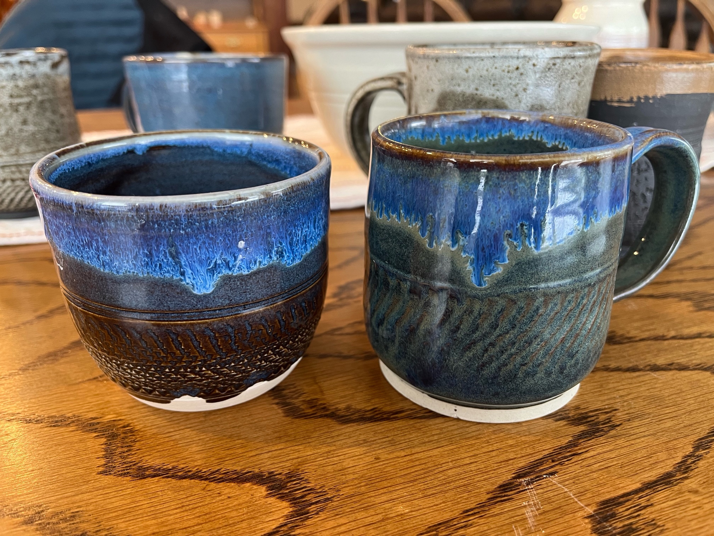

Gallery
This is meant to be a sampling of the many works that Ken can create. This is not the only ones that Ken has and is not the only types that he can make! Enjoy!

Bowls
Ken makes many bowls and usually carves the outside to be textured in beautiful ways!

Cups
Ken has many many different kinds of cups, and uses tricks with the glaze and stain to make it have the signature look you see here.

Vases
This is a beautiful vase that showcases some of the coloration and simple beauty that pottery can add to anything.

Jars -- Coin, Cookie, or otherwise
These jars are a particularly beautiful creation because it allows for more carving than most other creations! They come in all different shapes and sizes!